ReinforcementLearning
Sergiy Goloviatinski - inf3dlm-b - HE-Arc
31 Janvier 2019
Sommaire
- But du projet
- Déroulement du projet
- Introduction au Reinforcement Learning
- Points importants du projet
- Conclusion
- Questions
But du projet
- Prendre en main des solutions de deep RL
- Développer un module Python de RL avec des approches de deep Q-Learning
Déroulement du projet
Qu’est-ce que le Reinforcement Learning ?
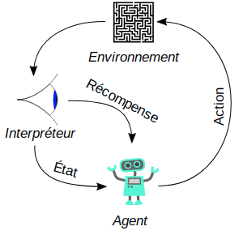 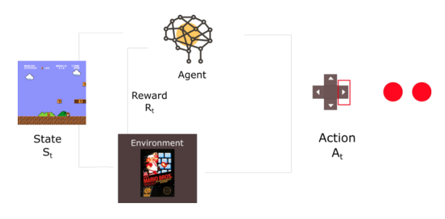
Exploits du Reinforcement Learning

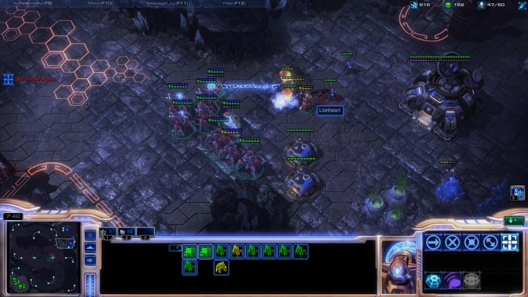
Q-Learning
- Q comme “qualité”
- “Fonction qui prédit qualité d’une action exécutée dans un état donnée du système en se basant sur des expériences passées”
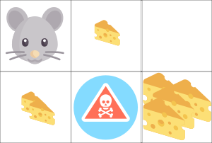
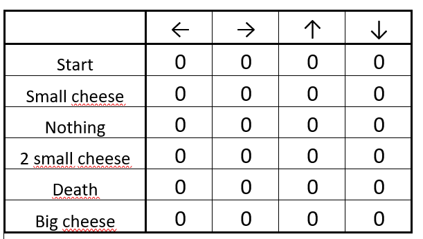
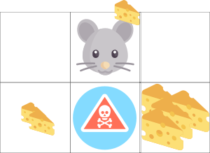
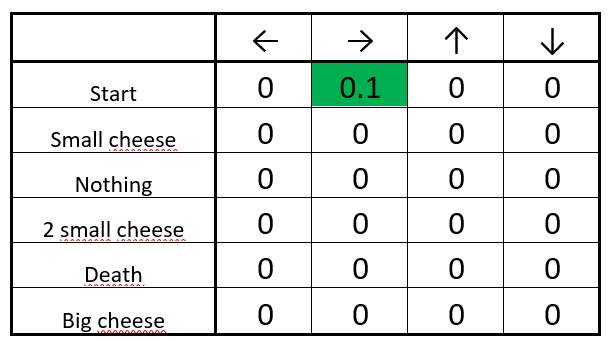
Deep Q-Learning
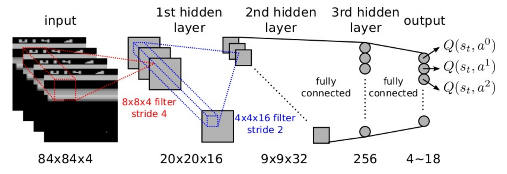
Comparaison de frameworks de RL
Framework retenu: keras-rl
- Plus facile à prendre en main que dopamine
- Meilleurs scores dans scénarios de test
- Plus mature
- Le reste des critères, ~ équivalent
Doom - Présentation du scénario
Récompense:
- Par défaut:
- +1 si tue ennemi
- -1 si meurt
- +1 si touche ennemi
- -0.1 si perds vie/munition
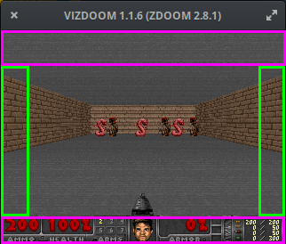
Données accessibles:
- Input du réseau de neurones:
- Pixels (78x52 ou 160x84)
- Calcul de la fonction de score:
- Points de vie
- Munitions
- Nombre de touchers
Doom - Résultats
Début entraînement
NN Input:
image 78x52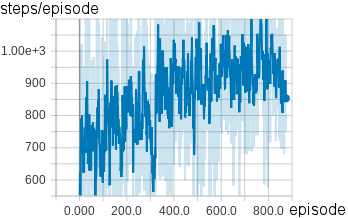
image 78x52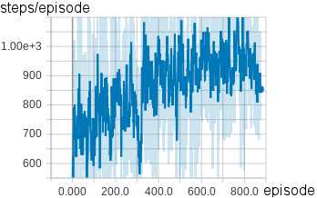
NN Input:
image 160x84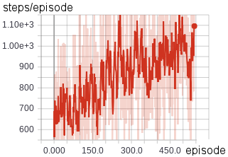
image 160x84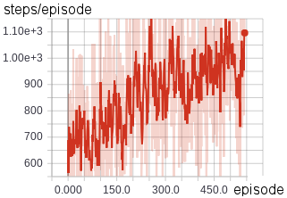
Flappy Bird - Présentation du scénario
Récompense:
- +1 par tuyau passé
- hauteur impact dernier tuyau
- -5 si tombe
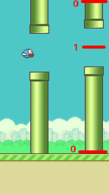
Input réseau de neurones:
- Vecteur caractéristique
- player y position
- players velocity
- next pipe distance to player
- next pipe top y position
- next pipe bottom y position
- next next pipe distance to player
- next next pipe top y position
- next next pipe bottom y position
Flappy Bird - Résultats
Début entraînement 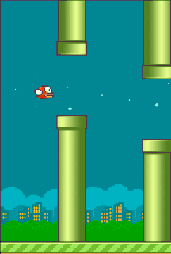 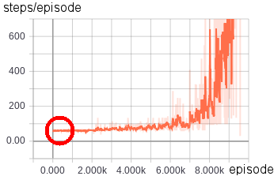
Premiers progrès  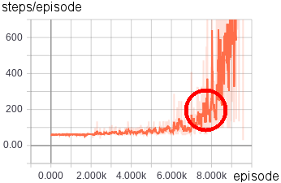
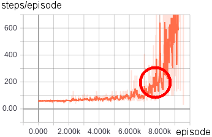
 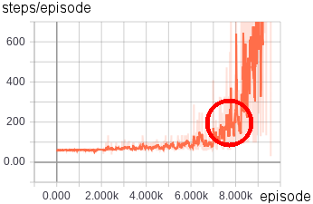
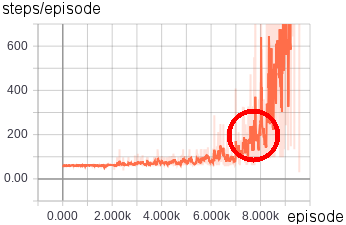
Fin entraînement  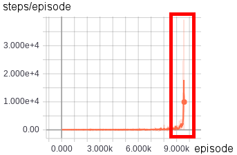
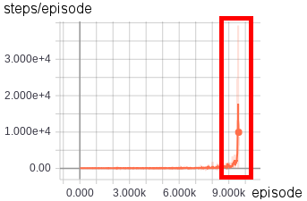
 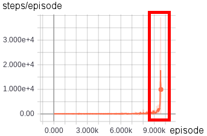
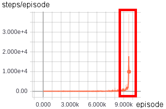
Conclusion
- Grande partie du projet était l’apprentissage des algorithmes de deep RL
- Difficultés du RL
- Interface avec environnement
- Conception de la fonction de récompense (important)
- Accès aux données
- Résultats convaincants, surtout FlappyBird